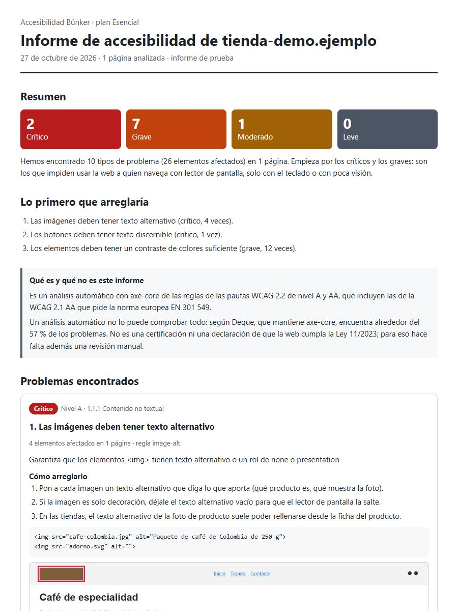

Qué falla en la accesibilidad de tu web, y cómo arreglarlo
Analizamos tu web con las reglas de las pautas WCAG 2.2 y te enviamos un informe en español con cada problema, dónde está, a quién perjudica y cómo se arregla. Sin tocar nada de tu web.
Así es el informe

Qué recibes
- Un PDF y una página web con los problemas ordenados de más a menos grave.
- En cada uno: el criterio WCAG que incumple, cuántas veces aparece, una captura con el elemento marcado y el código que lo causa.
- Los pasos para arreglarlo, con un ejemplo de código, para ti o para quien te lleva la web.
- La lista de lo que hay que revisar a mano, porque ningún análisis automático lo ve todo.
Cómo funciona
- Eliges plan y pagas con tarjeta en Stripe. Puedes poner el NIF de tu empresa.
- En el pago nos dices la dirección de tu web.
- Recibes el informe por correo en el plazo de tu plan.
Precios
Esencial
180,29 € con IVA
Hasta 10 páginas de tu web, informe en 48 horas.
PróximamenteAmplio
301,29 € con IVA
Hasta 30 páginas de tu web, informe en 72 horas.
PróximamenteLo que este informe no es
Es un análisis automático. Según Deque, la empresa que mantiene axe-core, la herramienta que usamos, un análisis así encuentra alrededor del 57 % de los problemas de accesibilidad.
No es una certificación ni una declaración de que tu web cumpla la ley: para eso hace falta además una revisión manual, y el informe te dice qué revisar.
Estudio: así están las webs españolas
Hemos analizado 377 webs .es populares. Mira cuántas tienen problemas graves y cuáles son los más frecuentes.
Guías gratuitas
Si prefieres arreglarlo por tu cuenta, tenemos guías en español para los fallos de accesibilidad más comunes, con ejemplos de código.
Preguntas frecuentes
¿Me obliga la ley a tener una web accesible?
Desde el 28 de junio de 2025, la Ley 11/2023 exige que muchos servicios digitales para consumidores, como las tiendas online, sean accesibles; para lo que ya existía hay plazos hasta 2030 en algunos casos. La directiva europea de la que sale exime a las microempresas que prestan servicios (menos de 10 personas y hasta 2 millones de euros al año). Si dudas de si te afecta, consúltalo con tu asesor: el informe te dice qué falla, no si estás obligado.
¿Tocáis algo de mi web?
No. La visitamos como cualquier visitante, una página cada vez, sin entrar en zonas privadas ni rellenar formularios.
¿Qué páginas analizáis?
La de inicio y, a partir de ahí, una de cada sección (categorías, productos, contacto…), para cubrir las distintas plantillas de la web hasta el número de páginas de tu plan.
¿Sirve si mi web está hecha con WordPress, Shopify o PrestaShop?
Sí. El informe indica con qué está hecha la web cuando lo detecta, y los arreglos se explican para poder aplicarlos en ella.
¿Qué hacéis con mis datos?
Solo usamos tu nombre, tu email y los datos de tu empresa para entregarte el informe y la factura, y responderte. No los vendemos ni los usamos para publicidad, y se borran un año después de la entrega. Lo tienes todo en la política de privacidad.
¿Haces webs para otros? Informes con tu marca
Si eres una agencia o desarrollas webs, te hacemos el mismo informe con el nombre y el contacto de tu empresa, sin mencionar el nuestro, para que se lo entregues a tus clientes al precio que tú decidas.
- Esencial: 99 € + IVA por informe, en vez de 149 €.
- Amplio: 169 € + IVA por informe, en vez de 249 €.
- Sin mínimo de informes ni permanencia.
Escríbenos a oficiowebapp@gmail.com. También si tu web es muy grande.